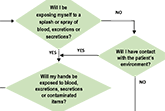

Ten things you need to ask your doctor about infection prevention and control
Ten Things You Need to Know About Infection Prevention and Control for Clinical Office
Practice
IPAC: Investigations & Resolutions Assessor Group
IPAC: Out-of-Hospital Premises (OHP) and Independent Health Facilities (IHF)
Cleaning, Disinfection and Sterilization of Medical Equipment / Devices
Routine Practices and Additional Precautions
Environmental cleaning toolkit